AI Academy · Level 3 · Grade 8 · Week 3 · Student lesson
Tokens and Context
Learn to understand, design, build, test and explain AI systems responsibly.
Project: Verified Study Buddy
Before you start
AI-2 Week 25: tokenizer units need not equal words.
Plan time to read, investigate and explain. Keep predictions separate from observations.
Student lesson · 1 of 14
Your mission
Your learning target
I can account for fixed text, evidence and reserved output under a toy budget.
I can select complete evidence for a stated question.
I can handle insufficient or conflicting evidence explicitly.
Remember before reading
Close your notes first. A rough first answer helps us choose the right starting point; it is not a score for your ability.
Without opening the old lesson, explain one key idea from A Distribution of Possibilities. Give an example and a mistake that the idea helps you avoid.
After trying, check the relevant lesson or ask your teacher. Change the part of your explanation that the evidence shows was wrong.
Week 3: Tokens and Context
Models operate on tokens within a limited context window.
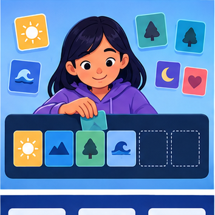
CREATOR MISSION
Tokenize text, remove context, and predict failure changes.
Creator name and date:
Readiness for the connected explanation
Does lower next-token loss guarantee supported factual answers?
Readiness for Attention as weighted information selection
Why can equal row sums conceal different sequences?
This week’s end goal
By the end, I can budget context and preserve evidence needed to interpret a requested fact.
Student lesson · 2 of 14
Notice the evidence
PICTURE STORY
Notice → Predict → Explain
Begin with visible evidence. Do not explain more than the picture and information support.
MYSTERY
The learners must use tokens and context to solve a problem. What information do they have? What decision or calculation do they make? What would count as evidence that it worked?
Three observations (what you can point to):
My prediction and the clue supporting it:
A closer explanation
For this lesson only, a fictional system allows 100 total token units for input plus reserved output. Its fixed instructions use 20 units, question 10 and output reserve 20. That leaves 50 units for evidence. These are supplied counts, not word counts or a claim about any deployed model. Other systems can use different input/output accounting, so read their exact contract.
The question is: “Which room is approved for the robotics meeting, and what is its capacity?” Evidence A, a current approval notice, costs 30 units and names room B. Evidence B, the current room register, costs 20 and gives room B capacity 12. Evidence C, an old approval notice, costs 25 and names room A.
Apply the connected idea: Attention as weighted information selection
Attention computes a weighted combination of value vectors, with weights derived from query-key compatibility. Queries, keys and values are distinct roles even when they come from the same sequence. A weight is a numerical contribution in this computation, not proof of the source’s truth or permission. This week supplies weights directly; Week 7 calculates them from scores.
Use three values V1=[2,0], V2=[0,4], V3=[4,2] with weights 0.5,0.25,0.25. Values have equal width and weights are nonnegative with sum 1. Compute each coordinate separately. No token is literally copied by this combination.
Student lesson · 3 of 14
See how it works
VISUAL MECHANISM
Input → Process → Output
Trace the information. At each stage, ask what changed and how you could test it.
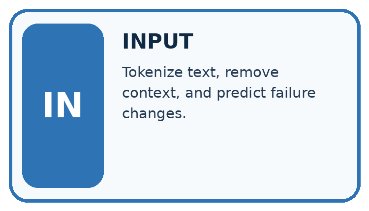
↓
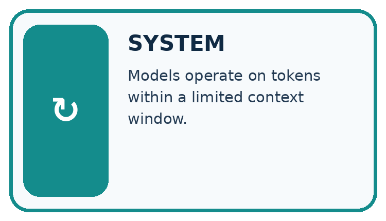
↓
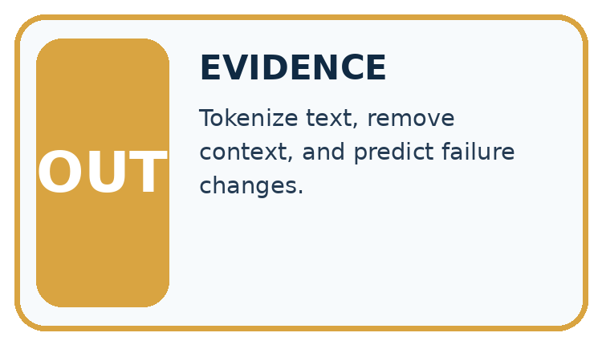
Which stage could fail even when the other two are correct? Explain:
A closer explanation
| Evidence | Cost | What it supports |
|---|---|---|
| A: current approval | 30 | Approved room B |
| B: current register | 20 | Room B capacity 12 |
| C: superseded approval | 25 | Old room A approval |
A+B costs 50 and fits exactly. Together they support both requested claims. A+C costs 55 and exceeds the evidence budget, while C+B fits at 45 but supplies an outdated room decision. A cheap set is not necessarily an adequate set. Preserve document IDs, versions and dates alongside content.
Keep the evidence roles separate
Apply the connected idea: Attention as weighted information selection
| Value | Weight | Weighted vector |
|---|---|---|
| [2,0] | 0.5 | [1,0] |
| [0,4] | 0.25 | [0,1] |
| [4,2] | 0.25 | [1,0.5] |
Adding the weighted vectors gives [2,1.5]. The same weights applied to different values can give a different result; the same values with different weights can also change it. For example weights 0,1,0 yield V2=[0,4]. The result is a representation to be used by later operations, not automatically a generated word.
Keep the evidence roles separate
Connect the picture and the explanation
Point to the input, the deciding step and the result in this week’s visual. Explain the same step in ordinary words. A picture helps when you can say what each part represents.
Student lesson · 4 of 14
Compare the cases
CASE GALLERY
Four Tests, Four Kinds of Evidence
A system is not understood until it survives more than one comfortable example.


NORMAL CASE: predict and name evidence. BOUNDARY CASE: predict and name evidence.


MISSING INFORMATION: predict and name evidence. TRANSFER CASE: predict and name evidence.
Which case is most likely to reveal a hidden assumption? Why?
Change one thing in the pictured case
Change: Increase B’s cost to 30 with all other costs fixed.
Prediction: A+B costs 48 and no longer fits the 45-token evidence capacity.
Reason: Do not silently omit the exception; use an approved source-preserving summary, another retrieval step or an honest incomplete-evidence response.
Student lesson · 5 of 14
Words that unlock the idea
VOCABULARY LAB
Words You Can Use to Reason
A definition matters when you can recognize the idea, use it, and contrast it with a near-miss.
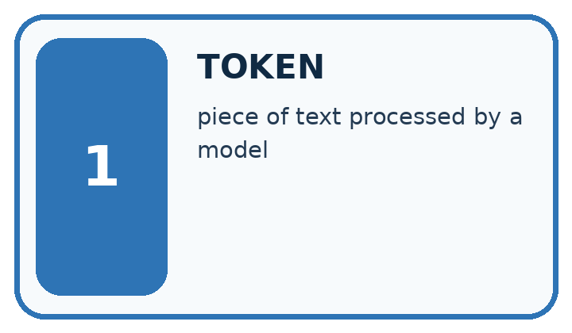
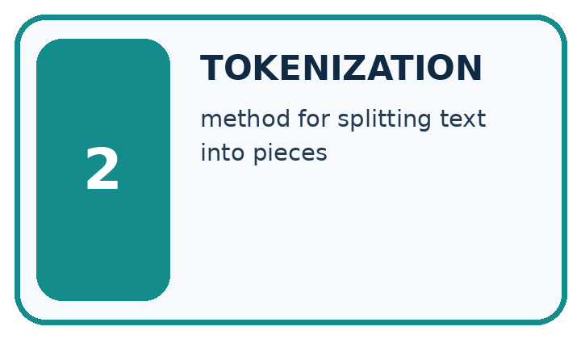
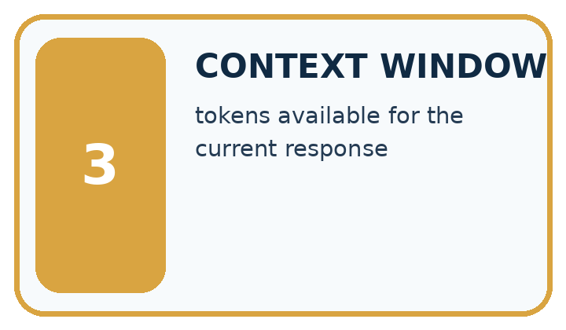
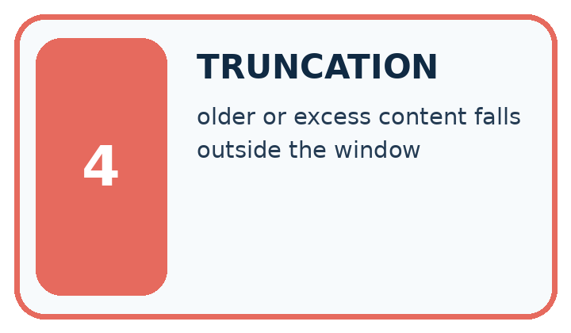
| Word | My own example | Not this / boundary |
|---|---|---|
| token | A unit of encoded text processed by a language model, which may be a word, part of a word or punctuation. | |
| tokenization | Converting text into the token units of a particular tokenizer. | |
| context window | The bounded amount of token information a model can process together in a particular use. | |
| truncation | Removing part of information, often because it exceeds a length or context limit. |
Words used in the closer explanation
| Word | Meaning |
|---|---|
| Context budget | The permitted input and output allocation under a stated model or classroom contract |
| Evidence selection | Choosing source material relevant to the requested claim |
| Reserved output | Capacity deliberately kept available for the response |
Terms for Attention as weighted information selection
| Term | Meaning |
|---|---|
| Query | A vector used to compare available keys for the current calculation |
| Key | A vector used to determine compatibility with a query |
| Value | A vector combined using the resulting attention weights |
| Mask | A rule excluding specified positions from a calculation |
Student lesson · 6 of 14
Follow a worked example
WORKED EVIDENCE
Reason Step by Step
Predict first. Then check each step. A correct answer without visible reasoning is incomplete evidence.
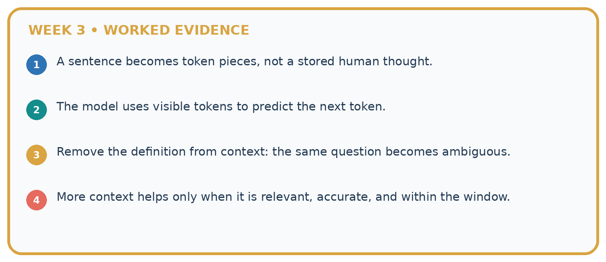
1. A sentence becomes token pieces, not a stored human thought.
2. The model uses visible tokens to predict the next token.
3. Remove the definition from context: the same question becomes ambiguous.
4. More context helps only when it is relevant, accurate, and within the window.
Recalculate, retrace, or restate the reasoning in your own representation:
CHECK Did the evidence answer the exact question? Did the total, path, or source record stay consistent?
A closer explanation
A source may contain an exception after a general statement. Cutting off the last paragraph can reverse its practical meaning. Selection should preserve the passages needed to interpret the requested fact, including scope, version and exceptions. If complete relevant evidence cannot fit, retrieve a smaller authoritative passage or request clarification rather than silently remove a qualifying condition.
Including a document in context does not prove the generated answer uses it correctly. After generation, check each claim against its source. A source’s instruction-like content also does not acquire authority just because it fits in the evidence budget.
Apply the connected idea: Attention as weighted information selection
Suppose V3 is a future position unavailable to the current autoregressive step. The mask excludes it. For this supplied-weight example, renormalise the permitted weights 0.5 and 0.25 by their total 0.75, giving 2/3 and 1/3. The result becomes [4/3,4/3]. Merely setting V3’s contribution to zero while keeping the old weights produces [1,1], whose retained weights sum to 0.75; that is not the specified normalised combination.
If every position is excluded, the permitted total is zero. This contract reports no available value rather than dividing by zero or silently using a future position. A real implementation needs its own documented handling for empty masks. A causal mask restricts information paths; it does not make retrieved content factually trustworthy.
Learn from the worked case
Cover the result before checking it. Say what is given, choose the procedure, and follow one step at a time. Then uncover the result and explain your first mismatch. Ask why a step is allowed, not only what number it produces.
A pictorial worked case: Tokens and Context
A fictional assistant has a small context budget for answering an event-capacity question.
The facts we will use
Total budget 100 toy tokens; instructions 20, question 10, output reserve 25. Evidence capacity is the remainder.
Current capacity record A costs 18; its safety exception B costs 20; unrelated slogan C costs 12. A says 20 seats; B caps this event at 12.
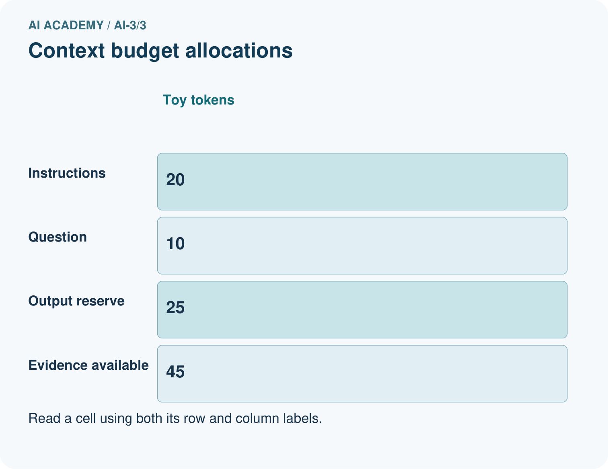
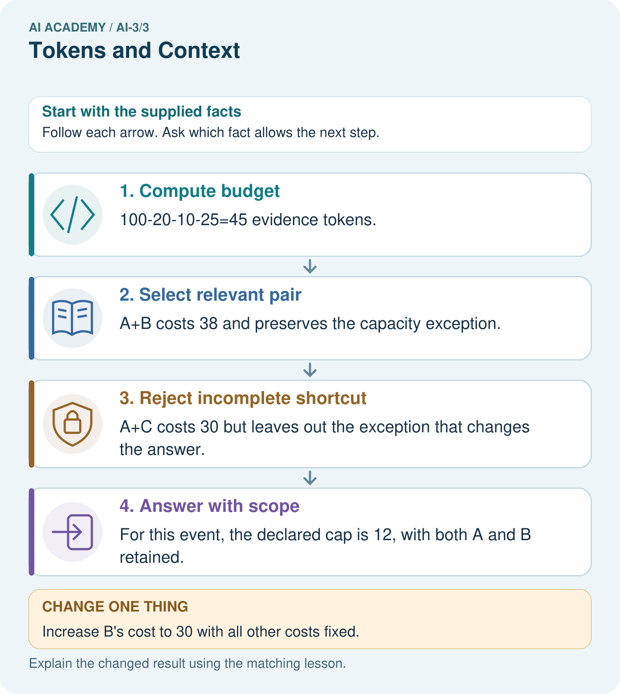
Read the picture one step at a time
Why this result follows
A context window limits how much information is available in one model call. Selecting the shortest passage is not always sufficient: an exception can change the meaning of a general statement. Keep the relevant source relationship visible. Toy token costs are supplied here; real token counts depend on the model’s tokenizer.
What this example does not establish
Fitting in context does not guarantee attention, correct interpretation or accurate generation.
Student lesson · 7 of 14
Find and repair a mistake
ERROR DETECTIVE
Compare → Diagnose → Repair
Do not patch the answer. Find the earliest unsupported assumption, wrong step, or weak evidence.
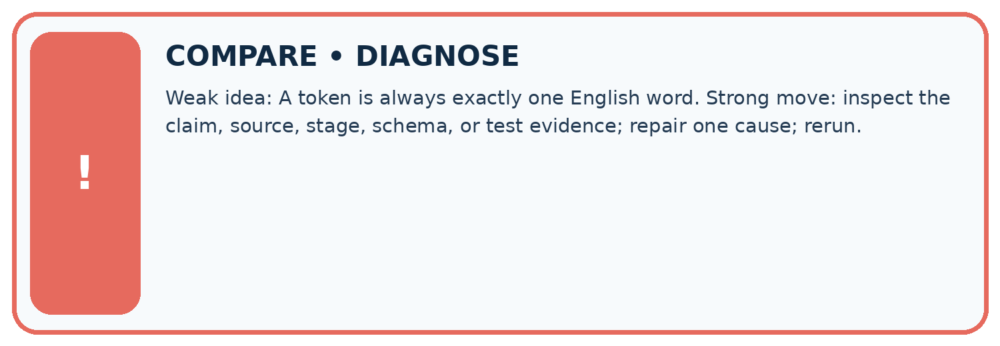
| Evidence record | Expected | Actual | Likely cause / next test |
|---|---|---|---|
| normal case | works | ||
| boundary case | stated rule | ||
| missing input | safe response | ||
| fresh transfer | generalizes |
Repair one cause. Why is this repair better than changing several things?
A closer explanation
If room approval is missing, do not infer it from capacity. If sources conflict without a documented current version, report the conflict or ask the responsible person. Keep the requested claim, budget calculation, selected source IDs and unresolved facts in the record. This classroom accounting develops the reasoning without needing a live model.
Apply the connected idea: Attention as weighted information selection
A large weight means a large coefficient in this particular weighted sum. It is not a complete explanation of the whole network, which may contain other heads, transformations and residual paths. It also does not establish that the high-weight source is true. Trace the actual values and downstream use before making a broader claim.
Student lesson · 8 of 14
Practise together
LOGIC STUDIO
Specify Before You Run
Prompts, schemas, retrieval, tool calls, and code are inspectable parts of one AI product.

SET task, audience, constraints, output_schema LOAD approved_context or retrieval_result CALL model or allowed_tool VALIDATE fields, claims, citations, and safety IF evidence missing: ask, retrieve, or abstain RETURN useful output + source trail + limitations
Trace one input. Which line changes the state or chooses a path?
A closer explanation
Supported total 80, fixed instructions 15, question 10 and reserved output 15 leave 40 units. Two complete relevant passages cost 18 and 22, fitting exactly. A third irrelevant passage costs 8; adding it would exceed the stated total. A short summary can reduce size but must retain claim-supporting qualifiers and be checked against the original.
Apply the connected idea: Attention as weighted information selection
Supported values A=[6,0], B=[0,3], weights 1/3 and 2/3. Their weighted combination is [2,2]. Masking B leaves A with normalised weight 1 and result [6,0]. This is a different information set, not a numerical repair to the original result.
Practise with less help: Choose complete support
Use workbook W2 for the connected example “Context limits and evidence selection”. First fill the input and rule boxes. Try the middle steps before asking for a hint. After a hint, try the next step yourself.
| Plan | Do | Check |
|---|---|---|
| What is given? Which rule or procedure applies? | Record each intermediate step. | Does the result follow? What remains unknown? |
Explain your trace to a partner. Your partner points to one step to check. Swap roles on the next case. Each person writes their own explanation.
Check your reasoning
Use the worked case for Context limits and evidence selection. Proposed explanation: “Token count equals word count”. Decide whether this explanation is supported. Point to the step or supplied fact that decides; explain your repair if needed.
Answer on your own before discussion. If you are unsure, say which step you need help with.
Practise the connected topic: Attention as weighted information selection
Use its named workbook W2. Identify the given inputs, try the middle steps with less help, then explain your trace. Check this claim before group discussion: Attention copies the highest-weight token
Explain the picture
Can A alone justify answering 20 seats after the exception is known?
This is supported practice. Keep the separately named independent case for an attempt before feedback.
Student lesson · 9 of 14
Run the investigation
EVIDENCE LAB
Predict → Test → Record → Explain
Keep expected and actual results separate. Surprises are useful data when recorded honestly.
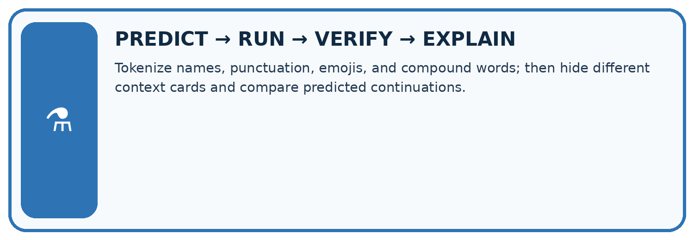
Tokenize names, punctuation, emojis, and compound words; then hide different context cards and compare predicted continuations.
| Test / input | Prediction | Actual | Evidence / calculation | Change or keep? |
|---|---|---|---|---|
| normal | ||||
| boundary | ||||
| missing | ||||
| fresh transfer |
What did the hardest test teach you that the normal test did not?
Plan → try → check
Before trying: what do I expect, and why? While trying: which step could first go wrong? Afterwards: what did I actually observe, and what should change? Keep “not run” if you only traced the procedure.
Student lesson · 10 of 14
Build your understanding
MASTERY
From Knowing the Word to Owning the Idea
Move upward only when you can produce evidence without copying the worked example.

1 • NAME: Define the concept without repeating the textbook.
2 • TRACE: Show the information, state, branch, calculation, or evidence path.
3 • APPLY: Solve a different example independently.
4 • CHALLENGE: Find a boundary case, counterexample, or unfair outcome.
5 • EXPLAIN LIMITS: Say when the result should not be trusted or used alone.
My strongest evidence of independent understanding:
Student lesson · 11 of 14
Connect your project
CUMULATIVE PROJECT
Verified Study Buddy
Every week adds one inspectable piece. The system must show how it reached a result.
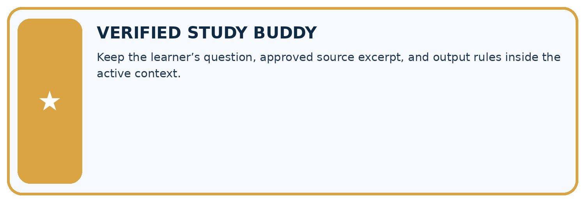
THIS WEEK’S CHECKPOINT Keep the learner’s question, approved source excerpt, and output rules inside the active context.
SYSTEM MAP Learner need → prompt/schema → approved sources/retrieval → model/tool → structured answer → verification → human decision
What will you add, change, or verify in the project this week?
What should remain under human control?
RESPONSIBLE DESIGN Collect only necessary information. Show uncertainty and limits. Never confuse fluent output with verified truth.
Evidence for your project
Design Study Buddy retrieval to preserve current facts, exceptions and source identity within its context budget.
Student lesson · 12 of 14
Show what you know
INDEPENDENT MASTERY PROOF
Explain • Transfer • Test • Defend
Complete this page without copying the worked example. Your reasoning matters more than decoration.
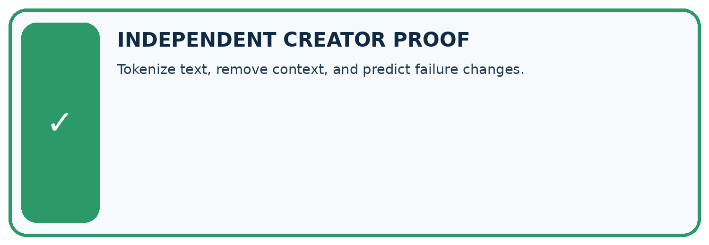
CHALLENGE Tokenize text, remove context, and predict failure changes.
1. My fresh example, trace, calculation, or design:
2. My evidence that it works (include a boundary or missing-data case):
3. One limitation, fairness concern, or situation needing human review:
SELF-CHECK □ I explained the mechanism □ I used evidence □ I tested a fresh case □ I named a limitation □ I can answer ‘why?’
Student lesson · 13 of 14
Study a complete case
Week 3 Worked case
Use the supplied details to practise the weekly concept before attempting the independent question. This case extends the illustrated lesson.
The situation
A toy window holds eight tokens; prompt uses six and quotation uses three.
The question
Does it fit? What should be preserved?
Worked explanation
Nine exceeds eight. Shorten or select material while preserving essential instructions and evidence. Real systems also have output-budget rules.
Explain it in your own words
Which detail supports the answer, and why does it matter?
Trace the supplied case visually
Nine requested tokens exceed eight spaces
| Evidence or stage | Value or result |
|---|---|
| Prompt | 6 |
| Quotation | 3 |
| Capacity | 8 |
A toy window holds eight tokens; prompt uses six and quotation uses three.
Does it fit? What should be preserved?
Nine exceeds eight. Shorten or select material while preserving essential instructions and evidence. Real systems also have output-budget rules.
Student lesson · 14 of 14
Try a new case independently
Independent case: Budget new evidence independently
Total 120, instructions 25, question 15, output reserve 30. Source D is current approval, cost 28; E is current capacity, cost 22; F is old approval, cost 18. Compute capacity, compare D+E and E+F, and state an honest fallback if D is missing.
Attempt this case before feedback. Record any help. Earlier examples below are further practice; a case already practised with feedback cannot establish fresh transfer.
Week 3 Independent application
Close the worked explanation. Apply the idea to this different question without copying.
A system can use only the last two messages. Message 1 says use centimetres; messages 2 and 3 discuss plants. What instruction may be lost, and how can the next request repair this?
My answer, with a trace, calculation or supporting evidence
Create and test
Change one relevant detail. Predict the result before testing. Include a boundary or missing-information case when it helps reveal a limit.
My changed input and expected result
Connect to your project
Keep the learner’s question, approved source excerpt, and output rules inside the active context.
The evidence I will keep
Your teacher has the independent answer and scoring criteria. Complete the matching workbook week to keep your practice evidence together.
Transfer practice from the original programme
A toy system allows 12 tokens total for input and reserved output. Instructions use 3, a source uses 7 and the planned answer needs 4. Compute the excess and propose a revision that preserves evidence.
Use feedback to improve
Attempt the independent case before hints. Record whether you worked alone, used a hint or followed a model. After feedback, fix the first unsupported step and explain why it changed. A later check uses a changed case, not a copied answer.